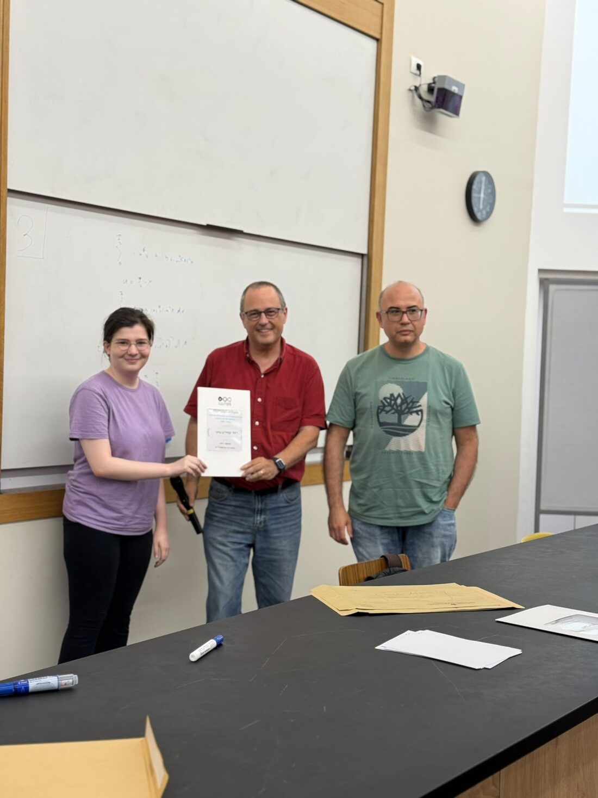
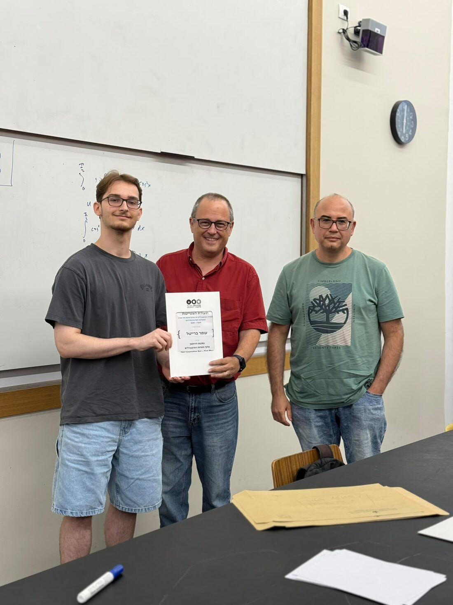
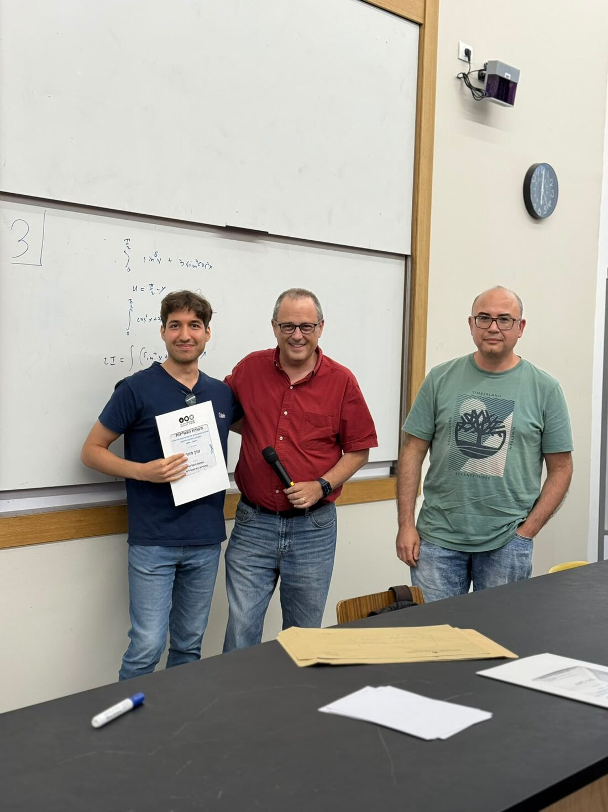

מקום שני
רות קוזלובסקי
בית הספר לפיזיקה ואסטרונומיה

תחרות האינטגרלים של אוניברסיטת תל אביב
דצמבר 2026 · שנת הלימודים תשפ״ז
HOW FAST CAN YOU SOLVE THIS?
התחרות הקודמת · תשפ״ו · יוני 2026
התחרות פתוחה לכל הסטודנטיות והסטודנטים לתואר ראשון בפקולטה למדעים מדויקים.
אוהבות ואוהבים אינטגרלים ואתגרים? הצטרפו לתחרות האינטגרלים של הפקולטה למדעים מדויקים!
17:00 התכנסות, פיצות ושתייה.
17:30 מתחילים בתחרות.
אפשר להגיע בכל זמן בחלון הבחינה של המועד שבחרתם, ולהתחיל עד חצי שעה לפני סיומו.
להרשמההמטרה היא לפתור נכון כמה שיותר אינטגרלים בזמן המוקצב. אין צורך להספיק את כולם כדי להשתתף.
בעת קבלת טופס הבחינה נרשמת שעת הכניסה, ובסיום נרשמת שעת היציאה. העלייה לגמר נקבעת לפי שקלול של נכונות הפתרונות וזמן הפתרון.
יש להביא כלי כתיבה. אין להשתמש במחשבונים או בחומר עזר.
תשעת המשתתפים בעלי התוצאות הטובות ביותר יעלו לגמר, שיתקיים ביום רביעי, 30 בדצמבר 2026, באולם לב. התכנסות וכיבוד מ־17:00. מתחילים ב־17:30.
שלב הבתים: שלושה מקצים של שלושה מתמודדים. בכל מקצה שלושה אינטגרלים, עד 3 דקות לכל אינטגרל. פותרים על הלוח מול הקהל, ומכל מקצה עולה מתמודד אחד.
שלב הגמר: שלושת העולים פותרים אינטגרל אחד. שני הפותרים הנכונים הראשונים עולים לדו קרב הסופי.
דו קרב סופי: שלושה אינטגרלים, עד 5 דקות לכל אחד. מי שצובר יותר נקודות זוכה בתואר אלוף תחרות האינטגרלים.
הגמר התקיים ב־11 ביוני 2026 באולם לב. שלושת הזוכים קיבלו תעודות הצטיינות ותווי קנייה.

בית הספר לפיזיקה ואסטרונומיה

פיזיקה והנדסת חשמל
אלוף תחרות האינטגרלים תשפ״ו
בית הספר למתמטיקה
כל האינטגרלים מתחרות תשפ״ו, עם תשובות. הדרך הטובה ביותר להתכונן למוקדמות.
סגן הדקאנית לענייני הוראה
מובילת LEAD
אחראי אקדמי